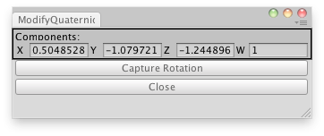

EditorGUILayout.Vector4Field
Parameters
| label | Label to display above the field. | |
| value | The value to edit. | |
| options | An optional list of layout options that specify extra layout properties. Any values passed in here will override settings defined by the style.See Also: GUILayout.Width, GUILayout.Height, GUILayout.MinWidth, GUILayout.MaxWidth, GUILayout.MinHeight, GUILayout.MaxHeight, GUILayout.ExpandWidth, GUILayout.ExpandHeight. |
Returns
Vector4 The value entered by the user.
Description 描述
Make an X, Y, Z & W field for entering a Vector4.

Modify X,Y,Z and W values directly of a GameObject.
using UnityEngine; using UnityEditor;
public class ModifyQuaternionDirectly : UnityEditor.EditorWindow { Quaternion quat; public Vector4 value;
[MenuItem("Examples/Modify internal Quaternion")] static void Init() { ModifyQuaternionDirectly window = (ModifyQuaternionDirectly)EditorWindow.GetWindow(typeof(ModifyQuaternionDirectly), true, "My Empty Window"); window.Show(); }
void OnGUI() { value = EditorGUILayout.Vector4Field("Components:", value); if (GUILayout.Button("Capture Rotation")) value = QuaternionToVector4(Selection.activeTransform.rotation);
if (GUILayout.Button("Close")) this.Close(); }
static Vector4 QuaternionToVector4(Quaternion rot) { return new Vector4(rot.x, rot.y, rot.z, rot.w); } }